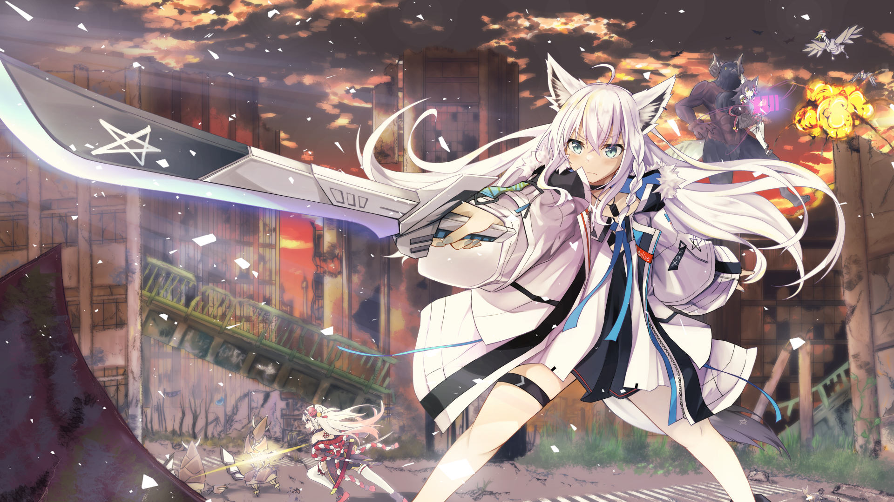
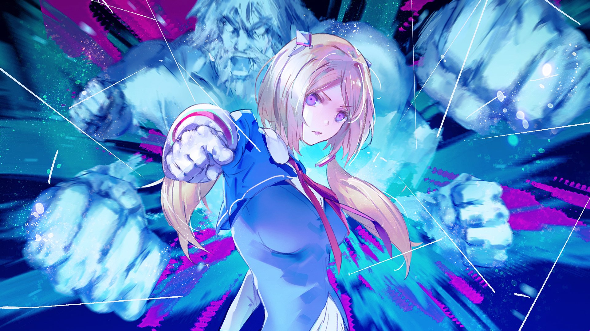

Présentation des membres de Hololive Gen 1 .
Hololive 1st Gen est la première génération de Hololive contenant des idols non affilié
Yozora Mel
Mel est un vampire faisant partie de la première génération de hololive .
Cliquez pour écouterShirakami Fubuki
Fubuki Shirakami est le renard de hololive . Elle est très connues via ces chansons et ces streams .
Cliquez pour écouter
Matsuri Natsuiro
Matsuri est une personne énergique, expressive et chaotique qui semble aimer faire des choses scandaleuses uniquement pour faire rire.
Cliquez pour écouterAki Rosenthal
Rosenthal Aki est une YouTubeuse virtuelle japonaise. Elle fait partie de la première génération de Vtuber créé par hololive.
Cliquez pour écouterAkai Haato
Akai Haato est ue fille qui aime bien taquiner ces fans sans pour autant les décourager . Ces fans l'appelent désormais Hachama en raison de sa manière de saluer.
Cliquez pour écouter